環境構築 (2026.09.01 更新)
このページは、Windows用の環境構築手順です。
Macの方はこちらのページに遷移してください。
以下の手順を参考に、各自で環境を構築ください。第1回 (10/7(水))の講義では、すでに環境が構築されていることを前提として講義を進めます。
プログラミングの講義を受講するために、はじめに各自のコンピュータにC言語の開発環境を構築する必要があります。
環境構築には、コンパイラとエディタが必要です。以下の表を参考に、自分のOSに合わせたコンパイラとエディタをインストールしてください。
| OS | コンパイラ | エディタ |
|---|---|---|
| Windows | MinGW | Visual Studio Code |
| Mac | Clang/LLVM | Visual Studio Code |
この二つを組み合わせると、機能性ばっちり、見た目もスマートなプログラマの環境になります。
ですが、環境構築は少し大変です。今から下をよく読んで、環境を構築してください。
目次
準備知識
MinGW, Command Line Tools for Xcode とは？
MinGW は、Windows 上で C 言語のコンパイルを行うための無料ツールです。
Xcode は、macOS に標準で用意されている統合開発環境です。
それぞれフリーで使えるアプリケーションです。それぞれのインストール⽅法の概要を以下に⽰します。インストールについては参考となる情報がインターネットに多くありますので、以下の資料で分からない点がありましたら、まずはインターネットで調べてみてください。
これから、次の3つの手順を順番に進めます。
① コンパイラ（MinGW）のインストール
② Visual Studio Codeのインストール
③ 動作確認
①～③まですべて完了すれば、環境構築は終了です。
コンパイラインストール
MinGWのインストール
ここから、Windowsで使用するコンパイラ「MinGW」のインストール手順を説明します。
1. 以下のサイトからMinGW-w64をダウンロードしましょう、まずは以下のサイトにアクセスします。
2. 次に、左側のサイドバーから、Downloads -> Pre-built Toolchains と進みます。
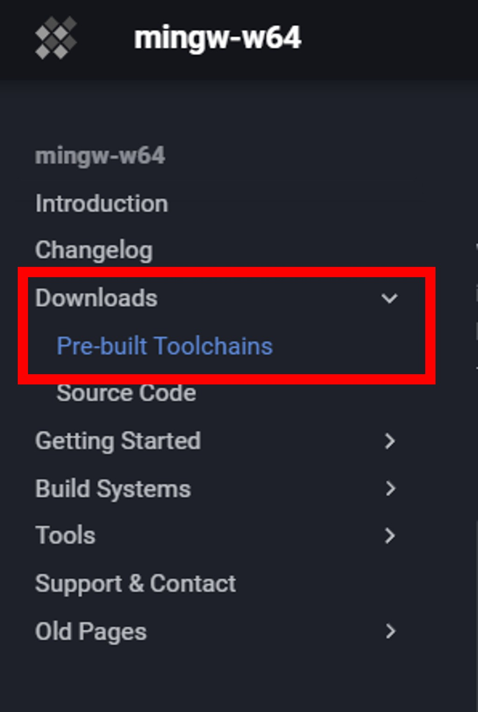
図1. minGWのセットアップ画面
3. 少しスクロールすると、「MinGW-W64-builds」というのがあるので、クリックします。
4. 画面が飛んで、「Installation: GitHub」というボタンが出ると思うので、クリックします。
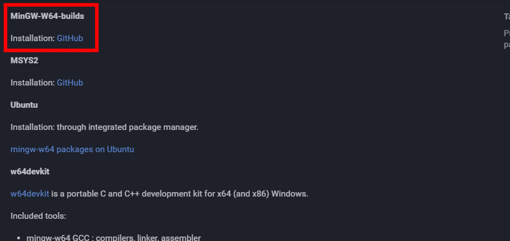
図2. minGWのセットアップ画面
5. 遷移した先のページの、Assetsの中を見ます。いろいろとあって判別が大変ですが、よく読んで、「x86_64-16.2.0-release-mcf-seh-ucrt-rt_v14-rev1.7z」という ファイルをクリックし、ダウンロードします。
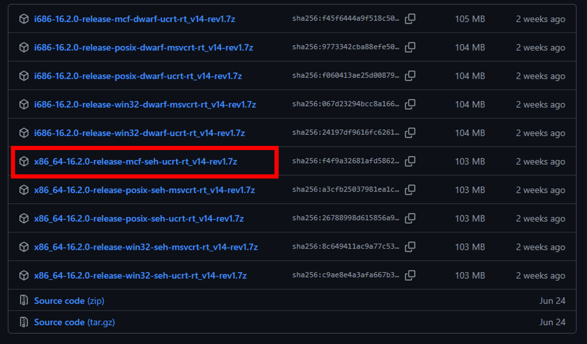
図3. MinGW-w64のダウンロードファイル
6. 自分のPCの「ダウンロード」フォルダの中にある先ほどダウンロードしたファイルを右クリックし、「すべて展開」を選択します。
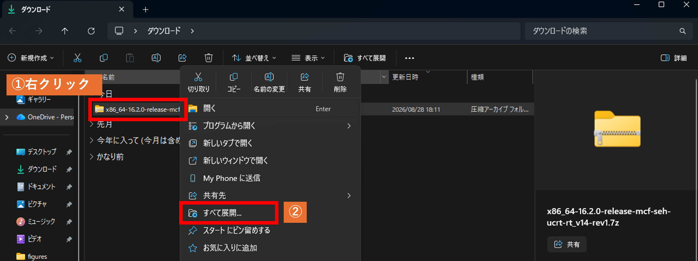
図4. 圧縮ファイルの展開
7. 「展開先の選択とファイルの展開」という画面が表示されたら、展開先に「C:\」と入力し、「展開」ボタンを押します。
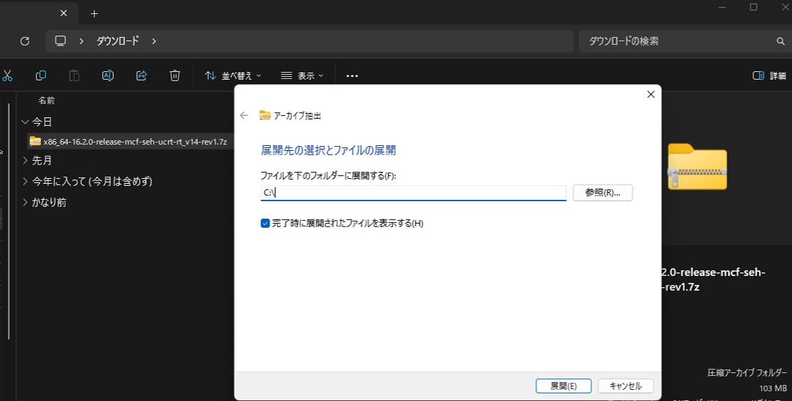
図5. 展開先の指定
8. 展開が完了すると、Cドライブ直下に「mingw64」フォルダが作成されます。下図のように、Cドライブ直下に「mingw64」フォルダがあることを確認してください。
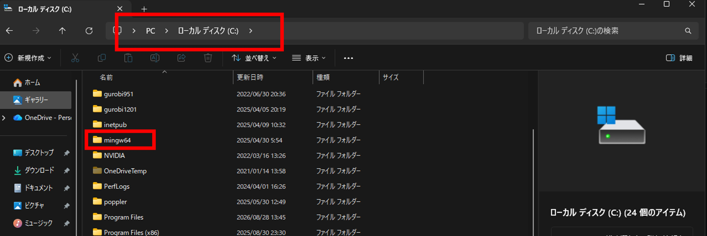
図6. Cドライブ直下のmingw64フォルダ
環境変数の設定
今から環境変数とよばれるものを設定します。これは、Visual Studio CodeからC言語を動かすために必要です。
1. Windowsの検索バーに、「システム環境変数」と打ち、「システム環境変数の編集」を選択します。
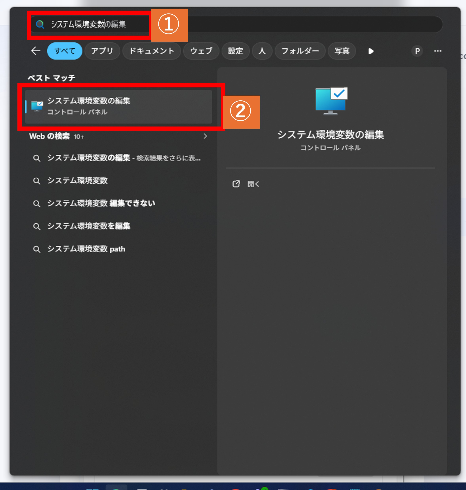
図7. システム環境変数の検索
2. 出てきた画面右下の、「環境変数 (N)」をクリックします。
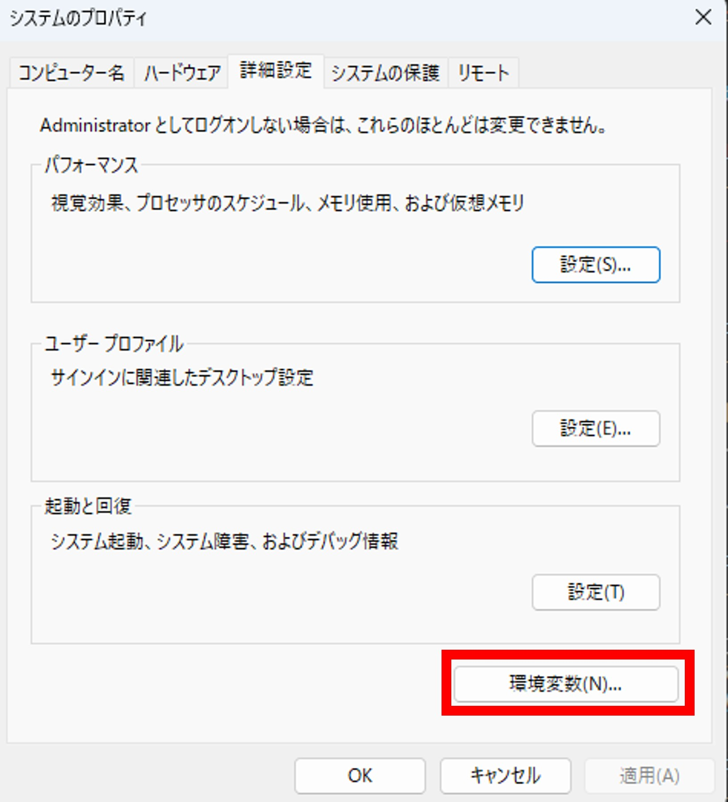
図8. minGWのセットアップ画面
3. 「(ユーザ名)のユーザ環境変数」と、「システム環境変数」の二つがありますが、システム環境変数の中を見て、「Path」を選択し、「編集」ボタンをクリックします。
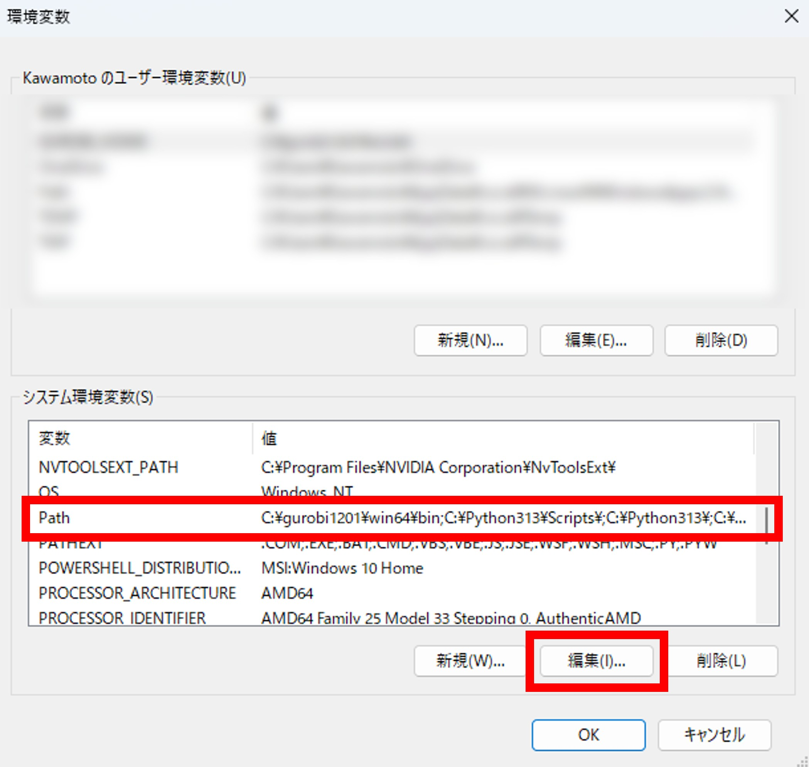
図9. システム環境変数のPathの編集
4. すると、以下のような画面が出てくると思います。
この画面で、「新規」をクリックし、以下の文字をコピーして貼り付けて追加し、「OK」ボタンを押してください。
C:\mingw64\bin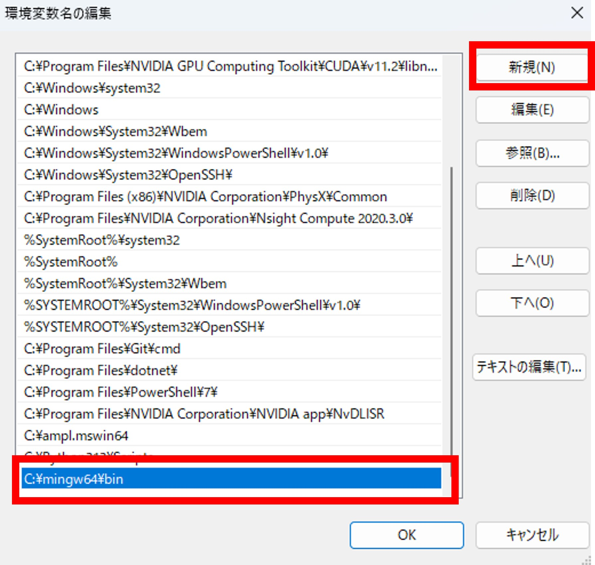
図10. minGWのセットアップ画面
minGWの動作確認
minGWが正常にインストールされているかを確認します。
Windowsの検索バーに、「cmd」と打ち、「コマンドプロンプト」を選択します。
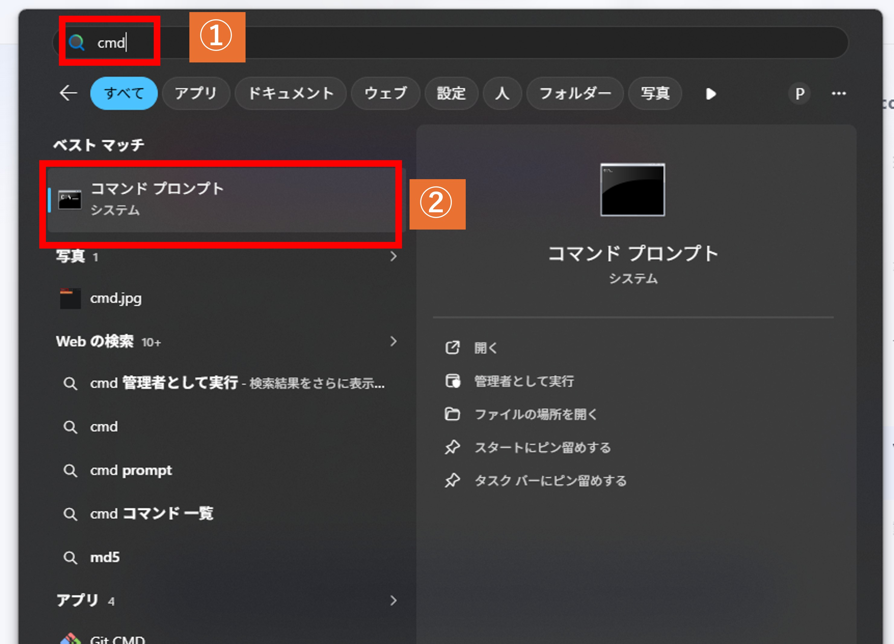
図11. コマンドプロンプトの起動方法
すると、黒い画面が出てくると思います。
そこに、以下のコマンドを入力して実行してください。
gcc --version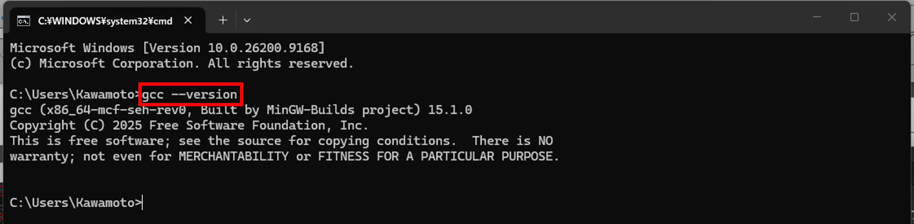
図12. gccのバージョン確認
もし、バージョンに関する情報が出力されていれば、正常にダウンロードされています。次の作業に移ってください。
もし、「'gcc'は、内部コマンドまたは外部コマンド、操作可能なプログラムまたはパッチファイルとして認識されません」、というようなメッセージが表示された場合、正常にインストールできていません。 よくある間違いのケースを、以下にまとめました。
- 「mingw64」フォルダがCドライブ直下に入っているか
- システム環境変数のPath設定は、正しく入力されているか、打ち間違えはないか。
- 間違えて「(ユーザ名)のユーザ環境変数」の方に、Pathを入力してしまっていないか。
これらを確認し、間違っていれば、前の手順の該当箇所をもう一度よく確認してください。
Visual Studio Code のインストール
コードを書くためのエディタには Visual Studio Code を使用します。
以下の公式サイトからインストールしてください。
画面通りに進めていけば問題なくインストールできると思いますが、もしやり方がわからない場合は、「VSCode インストール」などとweb検索して、インストール手順を紹介しているサイトを参照してください。
Visual Studio Code の日本語化
VSCodeは英語で全て書かれています。これは、皆さんには少し使いづらいと思います。
VSCodeは、たくさんの言語に対応していて、日本語化する設定方法を書いておきます。必須ではないですが、やっておいた方が皆さん的に楽だと思います。
1. VSCodeを起動
2. 左側のアイコンメニューから、Extensionsを選択
3. 検索ボックスにて、「japanese」と打ち込む
4. 「Japanese Language Pack for Visual Studio Code」を選択し、「Install」ボタンをクリック
5. 一度VSCodeを閉じ、再度起動させたら反映されている
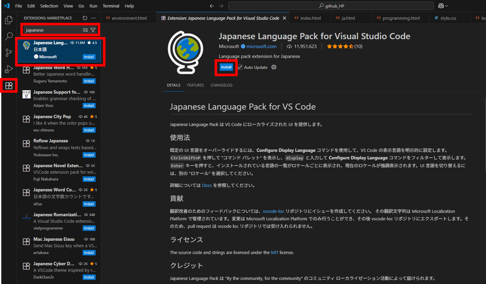
図13. VS Codeの日本語化
最後に、正しくコードが実行できないといけないので、動作確認をしましょう。
動作確認
エディタとコンパイラが準備できたら、最初の C プログラムを書いてみましょう。
とはいっても初めてなので、いろいろ設定する必要があります。下を読みながら、進めていきましょう。
作業フォルダの作成
皆さんは、大学の授業のレポート課題のwordやpowerpointをどのように管理していますか？
全部ダウンロードファイルに入れたり、デスクトップに置きっぱなしにしてるズボラな人も中にはいると思います。。
プログラムで作成されるコードファイルはとても大量で、かつ頻繁に書き換えたり消去が行われます。なので、プログラミングの授業で作成したファイルを雑に管理すると、間違えてファイルを消してしまったり、 見つからなくなってしまったりして、あとで大変なことになります。
なので、今からまずはプログラミング用の作業フォルダを作成しましょう。
「ドキュメント」フォルダに作業用フォルダは作成しましょう。ドキュメントには、エクスプローラを開いて、左側のメニューにあります。
「ドキュメント」フォルダ上で、左上の「新規作成」ボタンをクリックし、「フォルダ」を選択。フォルダ名は、「cpro」としましょう。
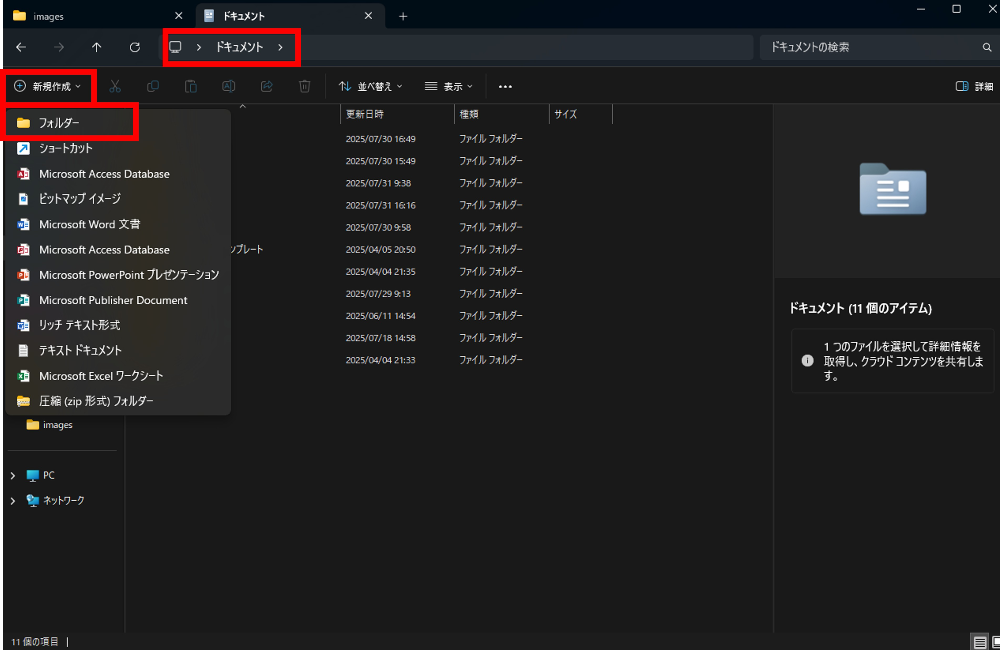
図14. 作業フォルダ作成1
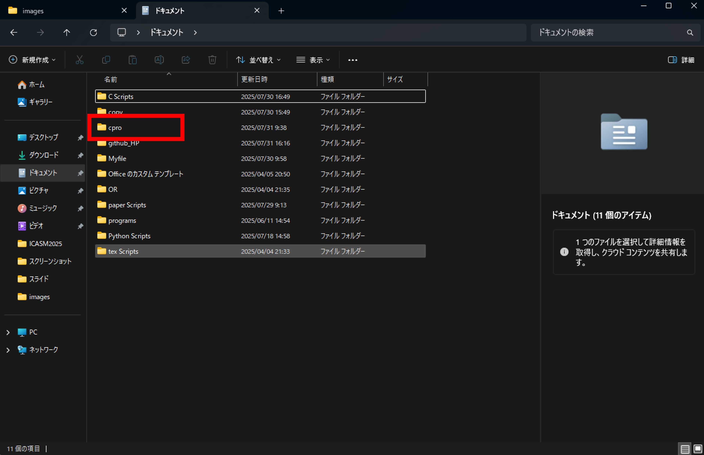
図15. 作業フォルダ作成2
プログラミングの講義で作成するソースファイル (コードのファイル)は、すべてここに保存するように常に心がけましょう。
動作確認
以下の手順で、まずは.cファイルを作成します。
- Visual Studio Codeを起動
- 上部メニューバーからファイル -> フォルダを開くを選択
- エクスプローラ画面が開くので、ドキュメントフォルダ内に作成した「cpro」フォルダをクリックし、フォルダーの選択をクリック
- 画面が移り変わって、「このフォルダ内のファイルの作成者を信頼しますか？」という画面が出てきたら、「はい、作成者を信頼します」を選択 (出てこなかったらそのまま次へ)
- 左側の「エクスプローラ」から，作業フォルダを右クリックし，新しいファイルを選択
- 「test.c」という名前でファイルを作成
test.cのファイルを作成したら，以下のプログラムを入力
#include <stdio.h>
int main(void){
printf("Hello, World!\n");
return 0;
}
プログラムの入力が終わったら、上部メニューバーからファイル -> 保存を選択し、保存してください。これをしないとプログラムが動きません。
コンパイル
VS Codeのターミナルを使って、作成したプログラムをコンパイルします。上部メニューバーからターミナル -> 新しいターミナルを選択すると、VS Codeのターミナルが開きます。
ターミナルが開いたら、以下のコマンドを入力してください。
gcc test.c -o test.exe -lm -ansi -pedantic -Wallプログラムの実行
コンパイルが成功すると、作業フォルダにtest.exeという実行ファイルが作成されます。ターミナルで以下のコマンドを入力して、プログラムを実行してください。
.\test.exeターミナルにHello, World!と表示されれば、プログラムが正常に実行されています。
環境構築のセットアップは以上となります。お疲れさまでした。